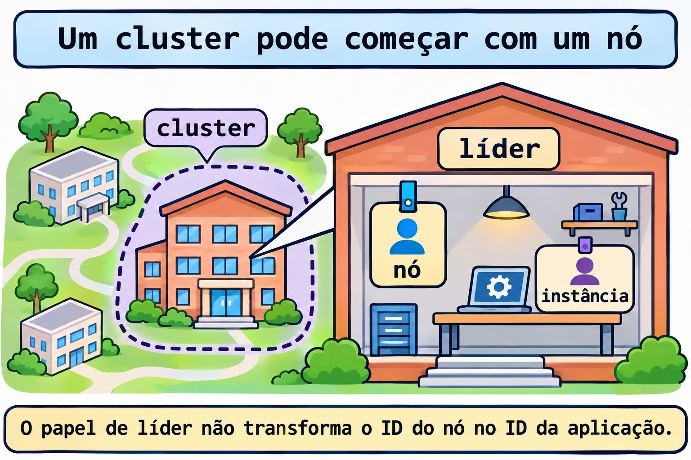
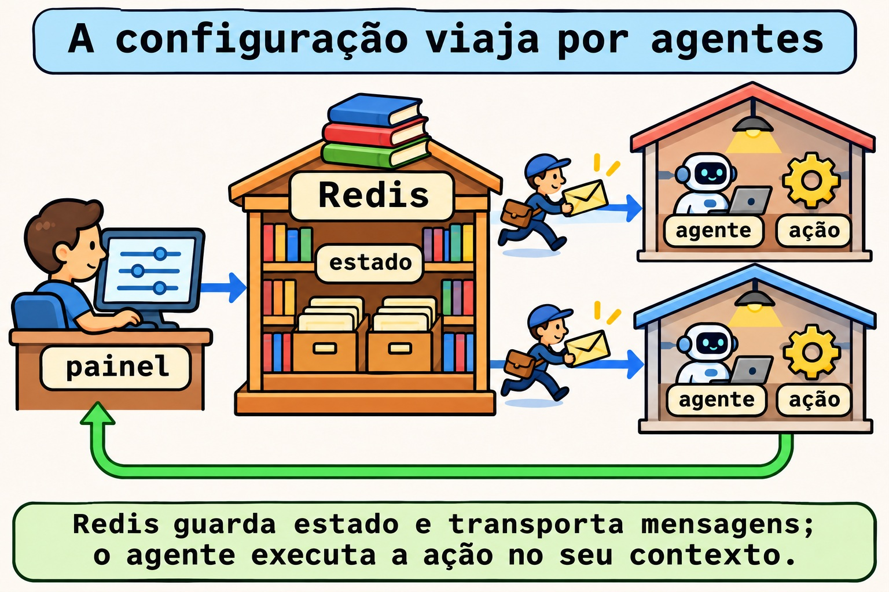

Aula 20.2 · Cluster, nó e módulo
O coração desta aula: localizar uma instância real e distinguir controle, execução e identidade.
| Ficha | Plano de trabalho |
|---|---|
| Módulo | M20 · NethServer 8 por dentro, aula 2 de 7 |
| Quando | Semana 27 |
| Ao final | localizar uma instância real e distinguir controle, execução e identidade. |
| Pré-requisitos | M18 e M19 corrigidos; inventário e acesso ao console autorizados |
| Duração | 90–120 minutos, além dos downloads |
| Snapshot | m20a2-inicio e m20a2-fim; somente VM 240 |
A VM 240, ns8-1, é o primeiro nó; a VM 241, ns8-2, só entra na 20.7. Nome da VM, hostname, ID do nó e ID da aplicação são campos diferentes.
Os comandos do Proxmox estão marcados como HOST. Os comandos NS8 usam Bash como root na VM, após sudo -i; não são comandos para o host de virtualização.
Use o Guia de bancada M20. O endereço isolado da 240 é 192.0.2.240; a gestão tem endereço real reservado e saída para Internet.
Não execute o próximo bloco se uma guarda falhar. Resultados esperados abaixo não são uma alegação de laboratório já executado.
1 · Aquecimento
- O número da VM é necessariamente o número do nó NS8?
- Um nome amigável identifica permanentemente os dados de uma aplicação?
- Se duas telas exibem a mesma etiqueta, você já provou que mostram a mesma instância?
2 · Por que importa
Uma aplicação pode ter nome amigável, ID interno, UUID e nó associado. Misturá-los leva você a buscar logs no usuário errado ou a agir sobre outra instância.
Nesta aula instalamos uma única DokuWiki de laboratório. Ela continua sendo a mesma aplicação nas próximas aulas; não criaremos uma cópia para cada comando de demonstração.
Ponte Windows
Uma etiqueta de servidor em um console não equivale ao SID de uma conta nem ao GUID de um objeto. Aqui também separam-se apresentação, identidade e local de execução.
3 · Modelo mental


O líder recebe o painel de administração do cluster. O nó executa os componentes que lhe foram atribuídos; uma instância reúne os recursos da aplicação escolhida.
Ainda existe somente a VM 240. Por isso a aplicação e o controle estão no mesmo lugar, mas esse arranjo não torna seus identificadores equivalentes.


Redis participa da configuração e da comunicação entre agentes. O agente da instância recebe uma ação e trabalha no contexto próprio, que pode incluir um usuário Unix rootless.
Ler estado não é licença para editar o banco. Esta aula usa somente consultas Redis restritas, sem despejar variáveis que podem conter segredos.
4 · O essencial
| Identificador | Quem o atribui | Pergunta respondida |
|---|---|---|
| VMID 240 | Proxmox | Qual máquina virtual? |
| NODE_ID | NS8 | Qual nó do cluster? |
| MODULE_ID | NS8 | Qual instância de aplicação? |
| MODULE_UUID | NS8 | Qual identidade de aplicação no controle? |
| Etiqueta | Operador no painel | Como apresentar a instância? |
Rocky × Debian
Os dois nós previstos para este módulo usam Rocky 9. A identidade NS8 não é deduzida do gerenciador de pacotes nem da distribuição.
O comando Podman de root mostra o armazenamento de root. Para uma aplicação rootless, entre no contexto com runagent, sem criar uma segunda instalação paralela.
Decida 1
O painel chama a aplicação de M20 wiki. Qual valor vai em runagent -m?
A. A etiqueta amigável, inclusive espaços.
B. O MODULE_ID real da instância, confirmado no inventário.
C. O VMID 240.
5 · Lab guiado
Passo 1 · Conferir quem está no controle
Palpite: O ID do primeiro nó precisa ser copiado de um exemplo?
sudo -i
test "$(id -u)" -eq 0 || exit 1
test "$(hostname -s)" = ns8-1 || exit 1
test -f /root/m20-lab/operador.env && test ! -L /root/m20-lab/operador.env || exit 1
test "$(stat -c '%U:%G:%a' /root/m20-lab/operador.env)" = root:root:600 || exit 1
cat /root/m20-lab/operador.env
. /root/m20-lab/operador.env
test "$NS8_IP" = 192.0.2.240 || exit 1
test "$NS8_FQDN" = ns8-1.lab.test || exit 1
NODE_NOW=$(redis-cli --raw HGET cluster/environment NODE_ID) || exit 1
test "$NODE_NOW" = "$NODE_ID" || exit 1
redis-cli PING
redis-cli ROLE
runagent -lNo painel aberto pelo caminho do guia, consulte Nodes e confira FQDN, nó e recursos. A etiqueta Node não é a VMID do hipervisor.
Saída esperada: O papel de líder, o ID do arquivo e o nó do painel correspondem à VM 240.
Verifique: Se o ID lido divergir, pare: um arquivo de inventário de outra bancada não autoriza comandos nesta máquina.
Passo 2 · Escolher uma origem de aplicação
Palpite: O catálogo mostra apenas aplicações já instaladas?
Abra Settings e Software repositories. Habilite o repositório nethforge já presente, inicialmente desativado. Atualize os metadados e volte ao Software center.
Localize DokuWiki. Abra os detalhes, confira origem, versão disponível e documentação. Não use uma imagem com nome parecido obtida de uma pesquisa fora do catálogo.
Registre que esta aplicação é mantida no repositório comunitário. A escolha de atualização e suporte deve considerar essa origem, não só o desenho do cartão.
Não adicione um repositório de teste nem altere a prioridade de outros repositórios para cumprir este exercício. Se o cartão não aparece, investigue metadados, DNS e acesso externo.
Saída esperada: DokuWiki disponível a partir da origem planejada e ainda não instalada por este passo.
Verifique: O registro distingue disponível de instalado; guarde versão e data observadas, sem inventar um número fixo.
Passo 3 · Instalar uma única instância no nó certo
Palpite: Clicar duas vezes em instalar apenas repete a conferência?
Antes de instalar, procure instâncias DokuWiki existentes no painel. Se houver uma instância não prevista, reconcilie o inventário; não a substitua nem crie outra por tentativa.
No HOST, confira a VM 240 e crie o snapshot da janela antes da instalação. Volte depois à sessão root da VM para os comandos NS8.
test "$(qm config 240 | sed -n 's/^name: //p')" = ns8-1 || exit 1
qm snapshot 240 m20a2-inicio || exit 1No Software center, instale DokuWiki no nó real conferido no Passo 1. Espere a tarefa terminar e abra a instância criada; não confunda download em andamento com aplicação pronta.
test "$(id -u)" -eq 0 || exit 1
test "$(hostname -s)" = ns8-1 || exit 1
test ! -L /root/m20-lab/operador.env || exit 1
test "$(stat -c '%U:%G:%a' /root/m20-lab/operador.env)" = root:root:600 || exit 1
. /root/m20-lab/operador.env
runagent -l
read -r -p 'Actual DokuWiki MODULE_ID: ' MODULE_ID
[[ "$MODULE_ID" =~ ^dokuwiki[0-9]+$ ]] || exit 1
test "$(redis-cli --raw HEXISTS cluster/module_uuid "$MODULE_ID")" = 1 || exit 1
MODULE_NODE=$(redis-cli --raw HGET cluster/module_node "$MODULE_ID") || exit 1
test "$MODULE_NODE" = "$NODE_ID" || exit 1
MODULE_UUID=$(redis-cli --raw HGET cluster/module_uuid "$MODULE_ID") || exit 1
[[ "$MODULE_UUID" =~ ^[0-9a-fA-F-]{36}$ ]] || exit 1
getent passwd "$MODULE_ID" || exit 1Saída esperada: Uma instância real, ligada ao nó esperado, com UUID e usuário Unix identificados.
Verifique: Copie o ID observado, não um nome de exemplo. Se o formato ou a localização divergir, pare e confira a versão instalada e o painel.
Passo 4 · Configurar a wiki sem misturar contas
Palpite: O administrador do painel NS8 é automaticamente o administrador da wiki?
Na configuração da instância, use host wiki.lab.test, nome M20 Lab, usuário administrativo wikiadmin, nome de exibição Lab Admin e contato fictício wiki-admin@lab.test. Defina uma senha exclusiva no formulário.
Não habilite Let’s Encrypt para .test. Ative a opção de redirecionamento HTTP para HTTPS e salve. A 20.4 instalará a confiança TLS privada apropriada para esse nome.
A conta da wiki é local à aplicação; não a confunda com student, root, o usuário Unix da instância ou o administrador do cluster. Domínios de usuário entram na 20.5.
getent ahostsv4 wiki.lab.test
curl --retry 10 --retry-delay 1 --retry-all-errors --max-time 5 --fail --silent --show-error --head http://wiki.lab.test/
openssl s_client -connect 127.0.0.1:443 -servername wiki.lab.test -showcerts < /dev/null 2>/dev/null | openssl x509 -noout -subject -issuer -dates -fingerprint -sha256A consulta HTTP usa apenas HEAD e não envia credenciais. Confira o destino do redirecionamento. No navegador pelo guia, compare a impressão do certificado da wiki com o console antes de qualquer login, como no acesso inicial da 20.1.
Saída esperada: Tarefa de configuração concluída, host correto e redirecionamento para HTTPS.
Verifique: O primeiro acesso TLS é uma exceção pontual desta bancada após identidade conferida; não é uma declaração de confiança pública. Não envie senha por HTTP.
Passo 5 · Ligar a identidade ao contexto do módulo
Palpite: Podman executado como root enxerga necessariamente os contêineres rootless da wiki?

runagent -m "$MODULE_ID" printenv MODULE_ID AGENT_ID
runagent -m "$MODULE_ID" id
runagent -m "$MODULE_ID" podman ps
runagent -m "$MODULE_ID" systemctl --user --type=service --state=running --no-pager
test ! -e /root/m20-lab/operador.before-20-2.env || exit 1
cp -a /root/m20-lab/operador.env /root/m20-lab/operador.before-20-2.env
ENV_NEW=$(mktemp /root/m20-lab/operador.XXXXXX) || exit 1
printf 'NS8_IP=%q
NS8_FQDN=%q
WIKI_FQDN=%q
NODE_ID=%q
VPN_CIDR=%q
MODULE_ID=%q
MODULE_UUID=%q
' "$NS8_IP" "$NS8_FQDN" "$WIKI_FQDN" "$NODE_ID" "$VPN_CIDR" "$MODULE_ID" "$MODULE_UUID" > "$ENV_NEW"
chmod 0600 "$ENV_NEW"
mv -f "$ENV_NEW" /root/m20-lab/operador.env
stat -c '%U:%G:%a %n' /root/m20-lab/operador.envAs consultas printenv pedem apenas duas variáveis de identidade. Não substitua por um despejo completo do ambiente, que pode carregar credenciais internas.
O arquivo do operador contém somente referências sem segredo. A cópia anterior preserva o estado antes de adicionar a identidade da aplicação.
Saída esperada: Contexto do módulo, usuário, contêineres e serviços correspondem à instância real.
Verifique: Se o comando depende de outra instância ou não encontra o usuário, pare. Não acrescente sudo dentro de runagent para fabricar um resultado.
Passo 6 · Comparar painel e terminal depois de uma alteração de rótulo
Palpite: Uma etiqueta nova cria uma nova aplicação?
No painel, registre a etiqueta atual e altere somente o rótulo amigável da instância para M20 wiki. Não use a opção de clonar nem mude o FQDN neste exercício.
test "$(redis-cli --raw HGET cluster/module_node "$MODULE_ID")" = "$NODE_ID" || exit 1
test "$(redis-cli --raw HGET cluster/module_uuid "$MODULE_ID")" = "$MODULE_UUID" || exit 1
runagent -l
runagent -m "$MODULE_ID" podman ps
redis-cli PING
systemctl status agent@cluster.service agent@node.service --no-pagerCompare a posição do módulo no painel com o ID e o UUID do registro. A alteração da etiqueta não autoriza mudar um usuário Unix nem uma chave do Redis.
Saída esperada: Etiqueta atualizada, mesma identidade e mesmo nó; nenhuma segunda instância foi criada.
Verifique: Guarde o registro para as próximas aulas. Na 20.3 será criada uma página fictícia para acompanhar dados; na 20.6 haverá prova de restauração.
Decida 2
O painel responde, mas o comando no contexto de outra instância não mostra a wiki. Qual conclusão é válida?
A. É necessário apagar o banco Redis.
B. O Podman perdeu todos os contêineres.
C. O teste consultou outro contexto; confirme MODULE_ID e nó antes de agir.
6 · Quebre e conserte
Quebra 1 · ID que não existe
Sintoma: Uma referência de ensaio não pertence ao cluster.
Investigação: Confira a ausência com HEXISTS antes do comando e mantenha a ação somente de leitura.
Causa: O nome de uma família de aplicações não identifica uma instância real.
Conserto: Volte ao MODULE_ID registrado e confirme novamente o vínculo com o nó.
Prevenção: Valide a identidade antes de qualquer comando de parada, remoção ou restauração.
Verifique: O contexto real responde e a referência ausente é recusada.
M20_MISSING=dokuwiki999999
test "$(redis-cli --raw HEXISTS cluster/module_uuid "$M20_MISSING")" = 0 || exit 1
if runagent -m "$M20_MISSING" podman ps; then
printf '%s
' 'STOP: unexpected existing context' >&2
exit 1
fi
runagent -m "$MODULE_ID" podman psQuebra 2 · Etiqueta confundida com identidade
Sintoma: Após mudar a etiqueta no painel, uma anotação antiga parece se referir a outra aplicação.
Investigação: Compare a etiqueta anterior, o MODULE_ID, o UUID e o nó; não renomeie arquivos do sistema.
Causa: A apresentação mudou, mas o objeto técnico não foi substituído.
Conserto: Atualize a etiqueta no diário ou restaure somente o rótulo antigo pelo painel.
Prevenção: Registre sempre ID e UUID junto do nome que uma pessoa lê.
Verifique: O mesmo UUID e o mesmo nó continuam associados ao MODULE_ID.
Quebra 3 · Conta da wiki no painel de cluster
Sintoma: Uma única tentativa de entrar no painel NS8 com wikiadmin é recusada.
Investigação: Confirme qual URL e qual diretório de contas o formulário está usando; não repita tentativas de senha.
Causa: Administrador da aplicação e administrador do cluster pertencem a escopos distintos.
Conserto: Use o administrador do cluster para o painel NS8 e a conta local somente para a wiki.
Prevenção: Guarde credenciais separadas e não iguale senhas entre esses papéis.
Verifique: Cada conta funciona apenas no escopo previsto, por HTTPS com identidade conferida.
7 · Armadilhas
Não conclua pelo ícone verde de uma tela. Compare identidade, tarefa concluída e resposta funcional no caminho usado pelo cliente.
O snapshot da VM inteira ajuda a voltar um ensaio local, mas não substitui o backup de aplicação e de configuração do cluster.
Uma senha ou token não pertence ao diário publicado. Registre nomes, horários e resultados; guarde os segredos em local separado.
8 · Quiz
- Por que a VMID não é o NODE_ID?
- O que distingue etiqueta, MODULE_ID e UUID?
- Qual é o papel de Redis neste modelo?
- Por que não usar podman de root para concluir que a wiki desapareceu?
- Mudar a etiqueta amigável deve mudar o UUID?
9 · Folha de bolso
runagent -l
redis-cli PING
redis-cli ROLE
redis-cli HGET cluster/environment NODE_ID
redis-cli HGET cluster/module_node "$MODULE_ID"
redis-cli HGET cluster/module_uuid "$MODULE_ID"Flashcards: Cluster → controle; nó → local; instância → aplicação identificada.
Flashcards: UUID → acompanhe a identidade; confirme o ID e o nó após mover ou restaurar.
10 · Checklist e fechamento
- [ ] Uma única DokuWiki instalada pela origem escolhida.
- [ ] Painel e terminal concordam sobre identidade e nó.
- [ ] Inventário root:root 0600, sem senhas ou tokens.
- [ ] Nenhuma edição manual de Redis, usuário do módulo ou arquivo gerado.
- [ ] Wiki preservada para a 20.3 e backup futuro.
Reboot de conferência: Na janela combinada, reinicie somente a VM 240 e reconecte pela gestão. Não reinicie o host Proxmox.
systemctl rebootApós o retorno, use novamente a sessão root na VM correta e repita a conferência:
test "$(id -u)" -eq 0 || exit 1
test "$(hostname -s)" = ns8-1 || exit 1
ip -br -4 address
ip -4 route
getent ahostsv4 ns8-1.lab.test
runagent -l
systemctl --failed --no-pagerAbra de novo o painel por nome, confira o nó e teste a aplicação se ela já foi instalada. Serviço iniciado não prova identidade TLS nem conteúdo correto.
Último exercício: Explique pelo terminal qual instância foi instalada e em qual nó ela roda, sem mostrar segredos.
11 · Na vida real
Em um ambiente real, obtenha o inventário e o responsável antes de qualquer alteração. Nesta missão, apenas leia versões, resolução de nomes e estado; não instale, pare ou remova aplicações.
Registre três evidências sem credenciais e uma pergunta que ainda depende de confirmação. O limite do que você sabe faz parte do diagnóstico.
12 · Aprofundar quando quiser
NS8: banco e chaves de identidade
Use a documentação da versão instalada e registre quando ela foi consultada. Rótulos do painel podem mudar; a prova técnica continua sendo a identidade e o comportamento observados.
!explica
!feynman
!quizUse os três prompts para explicar o percurso, ensiná-lo com suas palavras e testar as decisões. Não cole senhas, tokens ou conteúdo privado.
Gabarito comentado
Aquecimento: os IDs são atribuídos por sistemas diferentes; nome amigável é apresentação; telas iguais exigem comparar identidade e nó.
Decida 1: B. runagent exige o ID interno real, não a etiqueta nem o número do Proxmox.
Decida 2: C. Uma consulta em outro contexto não demonstra perda de dados na instância alvo.
Quiz 1: o Proxmox identifica a VM, enquanto o NS8 atribui o nó dentro de seu próprio cluster.
Quiz 2: etiqueta apresenta; MODULE_ID seleciona o contexto; UUID acompanha a identidade no plano de controle.
Quiz 3: guarda configuração e participa da troca de tarefas e eventos entre componentes; não é só cache da aplicação.
Quiz 4: armazenamentos e gerenciadores de usuário são distintos; consulte o contexto rootless da instância real.
Quiz 5: não; neste ensaio apenas a apresentação muda. Depois de mover ou restaurar, redescubra os vínculos reais em vez de presumir continuidade por nome.
← Aula 20.1 · Instalar NS8 · Índice das aulas · Plano do curso